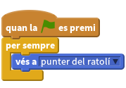
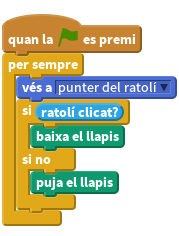
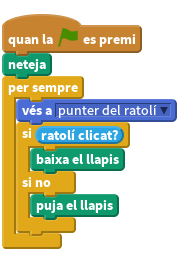
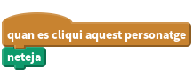
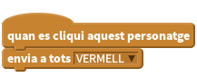
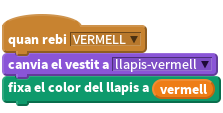
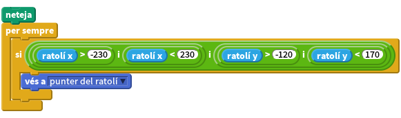

Introducció
En aquest projecte construireu una eina per dibuixar. Hi podreu pintar, canviar de color, netejar la pantalla, estampar, i moltes més coses!!
Pas 1: Arrossegar i dibuixar
Començarem amb un llapis que dibuixa quan l’arrossegueu per l’Escenari.
Llista de tasques
Comenceu un projecte nou de Scratch. Elimineu el gat (premeu el botó dret damunt del gat i llavors esborra).
Seleccioneu l’Escenari i llavors la pestanya Fons. Importeu el fons indoors/chalkboard.
Creeu una nova animació que es digui llapis, usant el recurs resources\green-pencil.
Canvieu a la pestanya vestits, cliqueu Edita per aquest vestit, i feu que el centre de la imatge sigui a la punta del llapis. Per fer-ho, cliqueu Fixa el centre del vestit i arrossegueu les línies fins que passin per la punta.
Feu que el llapis segueixi el ratolí per tot l’escenari utilitzant els blocs per sempre i vés a.

Ara el que volem és fer servir aquesta animació com un llapis de veritat. Si mireu dins la secció llapis, hi veureu diversos blocs per controlar una eina de dibuix. Els que ens interessen ara són baixa el llapis i puja el llapis
Controlarem el llapis amb el ratolí: quan el botó del ratolí estigui premut, el llapis “tocarà el paper” i quan no ho estigui, el llapis estarà aixecat. Una manera de fer-ho és amb un bloc si… si no i el bloc ratolí premut?:

Proveu el projecte
Cliqueu la bandera verda.
Comproveu que el llapis va allà on va el ratolí. Què passa si manteniu el botó del ratolí premut mentre moveu el ratolí? (No cal que us preocupeu encara pel color del llapis).
Deseu el projecte
Ben aviat us trobareu que la pantalla se us omple de gargots.
Per netejar la pantalla, podem fer servir el bloc neteja.

Proveu el projecte
Cliqueu la bandera verda.
Comproveu que el que havíeu dibuixat desapareix en clicar la bandera verda.
Deseu el projecte
Pas 2: Netejar la pantalla
Per no haver de parar i reiniciar tot el programa cada cop que volem netejar, afegirem un botó de neteja de pantalla. Utilitzarà el mateix bloc neteja que hem vist abans.
Llista de tasques
- Creeu una nova animació a partir del vestit resources/cancel button.
- Poseu-li un nom. Per exemple neteja.
- Posicioneu l’animació a la part baixa de la pantalla, prop del racó esquerre.
Programeu l’animació amb aquest simple script:

Proveu el projecte
Cliqueu la bandera verda.
Comproveu que el botó neteja sí que neteja la vostra pantalla.
Deseu el projecte
Pas 3: Canviar de color
Fins aquí només hem pogut dibuixar línies de color blau. Anem ara a dibuixar amb uns quants colors diferents! Afegirem algunes animacions al peu de la pantalla. Les animacions semblaran botons de colors. Si en cliquem un, canviarà el color de la línia que dibuixem. Per tal de saber quin color tenim activat, el botó canviarà també el color de l’animació llapis.
- Afegiu una animació nova, que anomenarem vermell, a partir del vestit resources/red-selector costume.
- Poseu-la en algun lloc a la part baixa de la pantalla, prop del botó neteja.
En prémer l’animació vermell, hauria d’enviar a tots el missatge vermell.

Ja està: això és tot el que fa aquesta animació. El gruix de la feina el farà el llapis.
Al llapis, importeu un nou vestit, resources/red-pencil. Feu que el centre del vestit se situi a la punta del llapis, tal com ho heu fet pel vestit verd original.
Afegiu un script nou al llapis. Quan el llapis rebi el missatge vermell, hauria de canviar al vestit de llapis vermell i el color amb què pinta hauria de canviar a vermell (utilitzeu el blocs fixa el color del llapis a). Pista: si cliqueu al quadret de color del bloc fixa el color del llapis a, podeu escollir el color exacte de la vostra animació vermell amb el recollidor de mostres.

Proveu el projecte
Cliqueu la bandera verda.
Comenceu dibuixant una línia. Cliqueu llavors el selector vermell i dibuixeu una mica més. Que canvia de vestit, el llapis? I que pinta vermell? I ja pinta des de la punta del llapis? O des d’alguna altra part del llapis?
Deseu el projecte
- Repetiu això mateix per als selectors de color blau, groc i verd.
Proveu el projecte
Cliqueu la bandera verda.
Comproveu que tots els botons selectors funcionen. Tots ells canvien el vestit al color esperat? Tots ells fan que el llapis dibuixi en el color esperat? Tots ells pinten des de la punta del llapis?
Deseu el projecte
Pas 4: Dibuixar només dins els límits
Potser ja us heu adonat que es pot pintar per tot l’Escenari, fins i tot a les vores. Ara voldríem mantenir els traços només a la part central de l’Escenari. Això s’aconsegueix fent que el llapis no pugui sortir de l’àrea de dibuix. La part de color gris clar.
Si ho recordeu, Scratch defineix els punts a partir dels eixos x i y de coordenades. La nostra àrea de dibuix se situa entre els valors 230 i -230 de l’eix x, i els valors 170 i -120 de l’eix y. Aquests valors es poden usar en un bloc si, que s’asseguri que el ratolí és dins l’àrea permesa abans de fer-hi anar el llapis.
Per fer-ho, posarem un nou bloc si al voltant del bloc vés a… si que ja teníem. Per construir això us caldran 3 blocs i: un per a les dues condicions sobre ratolí x, un altre per les de ratolí y, i finalment un altre per unir-les totes:

Com que no es pot pintar fora de l’àrea de dibuix, podem amagar el llapis al sortir-ne. Per fer-ho, en lloc d’un bloc si n’hi posarem un de si…si no. En cas que es compleixi la condició, hi posarem una intrucció mostra, i en cas que no, amaga.
![quan la BANDERA VERDA es premi
puja el llapis
neteja
per sempre
si <<<(ratolí x) > (-230)> i <(ratolí x) < (230)>> i <<(ratolí y) > (-120)> i <(ratolí y) < (170)>>>
mostra
vés a [punter del ratolí v]
si <ratolí clicat?>
baixa el llapis
si no
puja el llapis
fi
si no
amaga
fi
fi](fefa01bf266141a919aeb51a1dba9b050668d4cf.png)
Proveu el projecte
Cliqueu la bandera verda.
Encara podeu dibuixar dins l’àrea de dibuix? I fora? Què li passa, al llapis, quan sortiu de l’àrea de dibuix i hi torneu a entrar?
Deseu el projecte
Pas 5: Esborrador
Pintar línies està bé però a vegades fem algun eror que volem esborrar. Ho farem amb un nou llapis que pinta en gris (el color del fons!).
Afegiu una nova animació-botó a l’Escenari per seleccionar l’esborrador, a partir del vestit resources/eraser. Feu-lo més petit si cal perquè hi càpiga a la base de la pantalla. Funcionarà com els altres selectors, però enviarà un missatge ESBORRADOR.
Responent a aquest missatge, l’animació llapis canviarà el color de dibuix a gris i el vestit al mateix del botó esborrador (resources/eraser). Penseu-hi a reposicionar el centre de l’animació també en aquest cas.
Proveu el projecte
Cliqueu la bandera verda.
Comproveu que l’esborrador elimina les línies dibuixades. Podeu tornar al llapis, un cop heu seleccionat l’esborrador?
Deseu el projecte
Pas 6: Estampacions
La propera cosa que podem afegir és una eina d’estampació, per estampar petites imatges al nostre dibuix.
Llista de tasques
- Afegiu una animació nova, a partir del vestit o imatge que preferiu. Feu-la de la mida dels altres botons que ja hi ha a la base de la pantalla (esborrador, neteja, selectors de color). En clicar aquesta animació, s’enviarà a tots el missatge ESTAMPA.
- A l’animació llapis, afegiu el mateix vestit que heu escollit per a l’estampació.
- A l’animació llapis hi afegirem una variable, que es dirà modeLlapis (només per aquesta animació). La farem servir per recordar si estem pintant o bé estampant.
- També al llapis, hi afegirem un script que reaccioni al missatge ESTAMPA. Ha de canviar al vestit de l’estampa i posar el modeLlapis a fals.
- Canvieu la resposta a la resta de missatges de canvi d’eina (blau,vermell,groc,verd,esborrador) perquè tots posin el modeLlapis a cert.
- Finalment, allà on hi tenim la instrucció baixa el llapis, ara ho farem només si modeLlapis està a cert, si és fals, utilitzarem la instrucció estampa.
Proveu el projecte
Cliqueu la bandera verda.
Comproveu que l’eina d’estampació funciona. Què passa si torneu a les eines de llapis? Encara funcionen?
Deseu el projecte
Molt ben fet!!! heu completat el projecte bàsic. Us atreviu amb uns quants reptes?
Repte 1: Llapis Multicolor
Ara afegirem un llapis especial que pinta en multicolors. Això no ho podem fer amb els llapis o rotuladors del món real, i per això té la gràcia de mostrar-nos com un ordinador ens permet de fer coses diferents. El secret de com funciona és al bloc de canvi de color de llapis.
Per començar, afegireu el botó per escollir aquesta eina, i el vestit corresponent a l’animació llapis:
- Creeu una nova animació per seleccionar aquest llapis especial i poseu-la amb la resta de selectors a la part baixa de la pantalla. Feu servir el vestit resources/rainbow-selector i feu que envii a tots MULTICOLOR en ser clicat.
- Afegiu també aquest vestit (resources/rainbow-pencil) a l’animació llapis.
Fareu un script que canvïi el color de tinta uns quants cops per segon per crear l’efecte Arc de Sant Martí (Nosaltres hem trobat que canviant-lo 5 unitats cada 0.05 segons funciona prou bé, però podeu provar-ho amb altres valors). La tarja Scratch Cronòmetre mostra com fer que una cosa passi a cada cert interval de temps. Useu un bloc augmenta 5 el color del llapis en lloc de augmenta -1 el temps dins el bucle.
També us caldrà controlar el bucle perquè només canvii el color quan hi ha seleccionat el llapis multicolor, altrament tots els llapis tindrien el mateix efecte!!! Això es pot controlar amb una nova variable canviMulticolor que sigui cert per aquest llapis i fal per a la resta d’eines. Cada cop que el llapis respon a un missatge de selecció d’eina s’hauria de posar el valor corresponent a aquesta variable.
Fes servir el que has après per controlar l’efecte multicolor. Els scripts que reaccionen als missatges de selecció de llapis hauran d’actuar sobre dues variables: modeLlapis i canviMulticolor.
Proveu el projecte
Cliqueu la bandera verda.
Funciona com esperaves, el llapis multicolor? Què passa quan tornes a escollir una eina de llapis normal?
Deseu el projecte
Repte 2: Tecles ràpides
En lloc d’utilitzar les animacions a la base de l’escenari per seleccionar cada eina, podeu fer servir el teclat per seleccionar les diferents eines. Per exemple:
- b = canviar al llapis blau.
- g = canviar al llapis verd.
- e = canviar a l’esborrador.
- c = esborrar la pantalla.
També es podria permetre al usuari canviar el gruix del llapis amb les fletxes!
Proveu el projecte
Cliqueu la bandera verda.
Les eines es canvien amb les tecles assignades? Les eines funcionen bé quan se seleccionen amb les tecles?